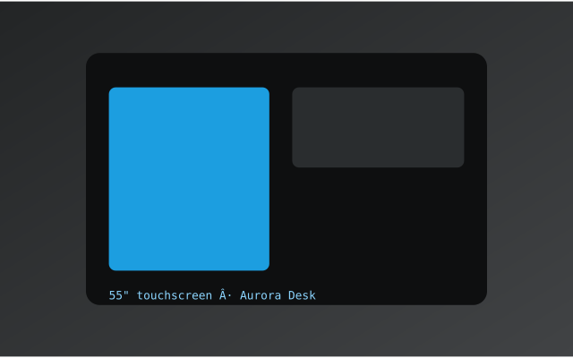

Every layout option expressible in blocks markdown — one document, ten patterns.
No directive at all. Everything between sections is a content block, type inferred from the markdown — paragraphs, emphasis, lists, quotes, tables, code.
Single-column flow is the baseline. Every layout below is an opt-in exception, not the default.
Text column: headings, prose, and lists accumulate here.

The primary reading flow gets two parts of the grid. Long prose stays comfortable; the sidebar stays narrow. Useful for article + fact-box layouts, changelogs with a metadata rail, or spec + example pairings.
Vars never render as page content — the renderer decides where they appear. Here var:link and var:cta become buttons, var:config becomes a settings card.
Dark-region content: prose, then a three-up grid, then a quote — a slide with real layout inside, not just a title card.
Sections close implicitly: the next heading or section directive ends them. Only columns has an explicit close tag, because it's a container, not a flow marker.
| Feature | Format | Preview |
|---|---|---|
| Sections | # or <!-- section --> | heading |
| Columns | <!-- columns:N --> … <!-- /columns --> | stacked |
| Data | <!-- var:name --> | hidden or code block |
| Media | <!-- media --> + image | image |
nui-blocks rendererconst tree = parseBlocks(markdown);
// → { document: {…}, sections: […] }One rule for directives: kind + optional first-line shorthand + optional line-based fields.
| Directive | Scope | Closes |
|---|---|---|
| document | whole file | — |
| section / # | until next section | implicit |
| media | binds the next image | implicit |
| var:name | inline / next line / fence | implicit |
| columns:N | container | /columns (explicit) |
| col | next slot inside columns | next col or /columns |
Everything else is markdown.
docs/cms-migration/blocks-markdown/proposal-a-kimi/showcase.md